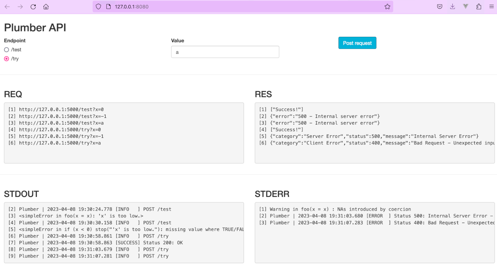
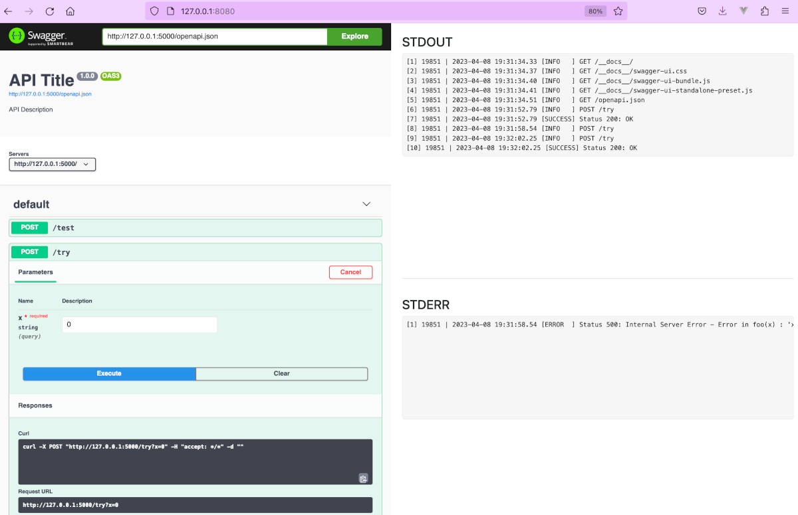

Differentiate client errors (4xx) from server errors (5xx) with a simple built-in logging mechanism for the Plumber and RestRserve HTTP API frameworks.
remotes::install_github("analythium/tryr")In client/server setups, the client might send user input that is incorrect. In such cases the front end application needs to know that the 4xx error status indicates that the message needs to be relayed to the user to correct the input.
As opposed to this, when the server fails due to unexpected reasons, the client only needs to know that an error with 5xx status happened. Logs are essential for backend developers to diagnose the problem.
Problem statement
The Plumber R package implements a simple error catching hook that converts all responses that are an error condition to a status code 500 - Internal Server Error.
Let’s see this for an example API:
plumber::pr("inst/examples/plumber.R") |>
plumber::pr_set_debug(FALSE) |>
plumber::pr_run(port=8000)Default behavior
We use a handler calling the function foo(): note that the contents of the response also depend on the pr_set_debug() settings that depends on whether we use interactive or non-interactive session. This is now turned off so that we can see the ‘production’ behavior.
foo <- function(x) {
x <- as.numeric(x)
if (x < 0)
stop("'x' is too low.")
"Success!"
}
#* @post /test
function(x) {
foo(x = x)
}Here are the responses from this /test endpoint for various specification of the x parameter:
# --- Request ---
# curl -X POST "http://localhost:8000/test?x=0"
# --- Response ---
# ["Success!"]
# --- STDOUT ---
#
# --- STDERR ---
# --- Request ---
# curl -X POST "http://localhost:8000/test?x=-1"
# --- Response ---
# {"error":"500 - Internal server error"}
# --- STDOUT ---
# <simpleError in foo(x = x): 'x' is too low.>
# --- STDERR ---
# --- Request ---
# curl -X POST "http://localhost:8000/test?x=a"
# --- Response ---
# {"error":"500 - Internal server error"}
# --- STDOUT ---
# <simpleError in if (x < 0) stop("'x' is too low."): missing value where TRUE/FALSE needed>
# --- STDERR ---
# Warning in foo(x = x) : NAs introduced by coercion
# --- Request ---
# curl -X POST "http://localhost:8000/test?x="
# --- Response ---
# {"error":"500 - Internal server error"}
# --- STDOUT ---
# <simpleError in (function (x) { foo(x = x)})(): argument "x" is missing, with no default>
# --- STDERR ---As you can see, the response has a generic 500 HTTP status irrespective of nature of the error. On the back end, the error is printed to STDOUT, whereas a warning got printed to STDERR.
This default behavior is undesired for multiple reasons:
- We need to be able to differentiate 4xx and 5xx errors
- The detailed error message is helpful on the backend, but we should print it to STDERR instead of STDOUT
Warning: when pr_set_debug(TRUE) the error message itself is returned by the response, this might contain sensitive information that we should not leak to the client.
Try/catch behavior
Alternatively, we can use some functions from tryr to handle these inconveniences:
bar <- function(x) {
x <- suppressWarnings(as.numeric(x))
if (is.na(x))
tryr::http_error(400L, "Unexpected input.")
foo(x)
}
#* @post /try
function(req, res, x) {
tryr::http_try(req, res, {
if (missing(x))
stop("'x' is missing", call. = FALSE)
bar(x = x)
})
}Here are the outputs from the /try endpoint for the same requests as before:
# --- Request ---
# curl -X POST "http://localhost:8000/try?x=0"
# --- Response ---
# ["Success!"]
# --- STDOUT ---
# 10548 | 2024-05-21 11:51:24.084 [SUCCESS] Status 200: OK
# --- STDERR ---
# --- Request ---
# curl -X POST "http://localhost:8000/try?x=-1"
# --- Response ---
# {"category":"Server Error","status":500,"message":"Internal Server Error"}
# --- STDOUT ---
#
# --- STDERR ---
# 10580 | 2024-05-21 11:51:25.155 [ERROR ] Status 500: Internal Server Error - Error in foo(x) : 'x' is too low.
# --- Request ---
# curl -X POST "http://localhost:8000/try?x=a"
# --- Response ---
# {"category":"Client Error","status":400,"message":"Bad Request - Unexpected input."}
# --- STDOUT ---
#
# --- STDERR ---
# 10592 | 2024-05-21 11:51:26.215 [ERROR ] Status 400: Bad Request - Unexpected input.
# --- Request ---
# curl -X POST "http://localhost:8000/try?x="
# --- Response ---
# {"category":"Server Error","status":500,"message":"Internal Server Error"}
# --- STDOUT ---
#
# --- STDERR ---
# 10624 | 2024-05-21 11:51:27.286 [ERROR ] Status 500: Internal Server Error - Error : 'x' is missingNow we can see that:
- Successful response (200) leaves a trace in STDOUT
- We can differentiate 4xx and 5xx errors
- When the error is 5xx, the error message is not included
- The detailed error message is printed to STDERR
So how did we do it? Here is what you get in tryr: we used http_try(). It is a wrapper that can handle expected and unexpected errors. Expected errors give the desired HTTP statuses using http_error(). Unexpected error are returned by stop() and we have very little control over those (i.e. these were written by someone else).
Implementation
The logic inside http_try() is this:
If we catch an error:
- the error is a clear server error coming from
stop()- log it as an ERROR + print the error message to STDERR
- return a generic status 500 message
- set the status code of the response object to 500
- the error is a structured HTTP error coming from
http_error()- log it as an ERROR with the message from the condition attribute
- return the specific HTTP error code with the structured output
- set the status code of the response object
If we don’t catch an error:
- the object is of class
http_success()(this comes in handy for async jobs and redirects)- log it as a SUCCESS with the message element
- return the specific HTTP status code with the structured output
- set the status code of the response object
- the object is NOT of class
http_success()- log it as a SUCCESS with a generic 200 message
- return the object as is (default status code 200 assumed)
Log messages are handled by the msg function. Here is how you can add a preroute hook: we add a logger to print incoming request info (HTTP method and route) to STDOUT. For the sake of better ingesting the logs we can set the logging type to JSON (or CSV) and the timestamp precision to 6 digits.
Sys.setenv(
TRYR_LOG_FORMAT = "JSON",
TRYR_LOG_DIGITS = "6"
)
plumber::pr("inst/examples/plumber.R") |>
plumber::pr_set_debug(FALSE) |>
plumber::pr_hooks(
list(
preroute = function(data, req, res) {
tryr::msg(
title = paste(
method = req$REQUEST_METHOD,
path = req$PATH_INFO
),
level = "INFO"
)
}
)
) |>
plumber::pr_run(
port = 8000,
quiet = TRUE)Output:
# --- Request ---
# curl -X POST "http://localhost:8000/try?x=0"
# --- Response ---
# ["Success!"]
# --- STDOUT ---
# {"pid":"10636","ts":"2024-05-21 11:51:28.330135","ut":1716313888.33009,"level":"INFO","value":3,"title":"POST /try","message":""}
# {"pid":"10636","ts":"2024-05-21 11:51:28.359236","ut":1716313888.35921,"level":"SUCCESS","value":4,"title":"Status 200: OK","message":""}
# --- STDERR ---
# --- Request ---
# curl -X POST "http://localhost:8000/try?x=-1"
# --- Response ---
# {"category":"Server Error","status":500,"message":"Internal Server Error"}
# --- STDOUT ---
# {"pid":"10668","ts":"2024-05-21 11:51:29.40934","ut":1716313889.40931,"level":"INFO","value":3,"title":"POST /try","message":""}
# --- STDERR ---
# {"pid":"10668","ts":"2024-05-21 11:51:29.435525","ut":1716313889.43551,"level":"ERROR","value":6,"title":"Status 500: Internal Server Error","message":"Error in foo(x) : 'x' is too low."}
# --- Request ---
# curl -X POST "http://localhost:8000/try?x=a"
# --- Response ---
# {"category":"Client Error","status":400,"message":"Bad Request - Unexpected input."}
# --- STDOUT ---
# {"pid":"10680","ts":"2024-05-21 11:51:30.482933","ut":1716313890.48287,"level":"INFO","value":3,"title":"POST /try","message":""}
# --- STDERR ---
# {"pid":"10680","ts":"2024-05-21 11:51:30.51150","ut":1716313890.51149,"level":"ERROR","value":6,"title":"Status 400: Bad Request - Unexpected input.","message":""}
# --- Request ---
# curl -X POST "http://localhost:8000/try?x="
# --- Response ---
# {"category":"Server Error","status":500,"message":"Internal Server Error"}
# --- STDOUT ---
# {"pid":"10713","ts":"2024-05-21 11:51:31.556088","ut":1716313891.55603,"level":"INFO","value":3,"title":"POST /try","message":""}
# --- STDERR ---
# {"pid":"10713","ts":"2024-05-21 11:51:31.584738","ut":1716313891.58471,"level":"ERROR","value":6,"title":"Status 500: Internal Server Error","message":"Error : 'x' is missing"}Structured errors are handled by the http_error() function that uses default error messages as defined in the http_status_codes data frame.
The http_success() works similarly but it does not produce an error. It can also pass a body argument. This is useful if we need to return simple status messages when responding to webhooks during async execution.
The http_response() can be used for any of the status codes and is behind the http_handler() function that is useful to set default handlers for Plumber:
plumber::pr("inst/examples/plumber.R") |>
plumber::pr_set_debug(FALSE) |>
plumber::pr_set_404(
function(req, res) {
tryr::msg(
title = paste0(
"Status 404: ",
tryr::http_status_codes["404", "message"]),
level = "INFO"
)
tryr::http_handler(req, res, 404L)
}
) |>
plumber::pr_set_error(
function(req, res, err) {
tryr::msg(
title = paste0(
"Status 500: ",
tryr::http_status_codes["500", "message"]),
message = err,
level = "ERROR"
)
tryr::http_handler(req, res, 500L)
}
) |>
plumber::pr_hooks(
list(
preroute = function(data, req, res) {
tryr::msg(
title = paste(
method = req$REQUEST_METHOD,
path = req$PATH_INFO
),
level = "INFO"
)
}
)
) |>
plumber::pr_run(
port = 8000,
quiet = TRUE)See the action
The inst/examples folder contains Shiny apps that you can edit and use to explore the differences between Plumber’s default error handling (/test endpoint) and the tryr approach (/tryr endpoint). See the response, request, STDOUT and STDERR from the calls:
source("inst/examples/app.R")
The second app is more general. You can edit the plumber_fun function definition and explore your own API’s output printed to STDOUT and STDERR:
source("inst/examples/explore.R")
Supported API frameworks
- plumber: the most popular API framework for R accounting for more than 95% of the total downloads.
-
RestRserve: the second most popular framework accounting for 2% of the total downloads. See the
RestRserve.Rexample.
Other frameworks (fiery, beakr, ambiorix) are not supported – using them will likely result in an error.
Let’s see an example for RestRserve:
## An example RestRserve API from https://restrserve.org/
library(RestRserve)
app = Application$new()
app$logger$set_log_level("off") # using tryr's logger
foo <- function(x) {
x <- as.numeric(x)
if (x < 0)
stop("'x' is too low.")
"Success!"
}
bar <- function(x) {
x <- suppressWarnings(as.numeric(x))
if (is.na(x))
tryr::http_error(400L, "Unexpected input.")
foo(x)
}
app$add_post(
path = "/test",
FUN = function(req, res) {
x <- req$parameters_query[["x"]]
out <- foo(x = x)
res$set_content_type("application/json")
res$set_body(out)
})
app$add_post(
path = "/try",
FUN = function(req, res) {
out <- tryr::http_try(req, res, {
x <- req$parameters_query[["x"]]
if (is.null(x))
stop("'x' is missing", call. = FALSE)
bar(x = x)
})
res$set_content_type("application/json")
res$set_body(out)
})
backend = BackendRserve$new()
backend$start(app, http_port = 8000)
# Rscript inst/examples/RestRserve.R
# curl -i -X POST "http://localhost:8000/try?x=0"
# curl -i -X POST "http://localhost:8000/try?x=-1"
# curl -i -X POST "http://localhost:8000/try?x=a"
# curl -i -X POST "http://localhost:8000/try?x="# --- Request ---
# curl -X POST "http://localhost:8000/try?x=0"
# --- Response ---
# "Success!"
# --- STDOUT ---
# -- running Rserve in this R session (pid=10727), 2 server(s) --
# (This session will block until Rserve is shut down)
# 10759 | 2024-05-21 11:51:32.638 [SUCCESS] Status 200: OK
# --- STDERR ---
# --- Request ---
# curl -X POST "http://localhost:8000/try?x=-1"
# --- Response ---
# {"category":"Server Error","status":500,"message":"Internal Server Error"}
# --- STDOUT ---
# -- running Rserve in this R session (pid=10760), 2 server(s) --
# (This session will block until Rserve is shut down)
# --- STDERR ---
# 10772 | 2024-05-21 11:51:33.681 [ERROR ] Status 500: Internal Server Error - Error in foo(x) : 'x' is too low.
# --- Request ---
# curl -X POST "http://localhost:8000/try?x=a"
# --- Response ---
# {"category":"Client Error","status":400,"message":"Bad Request - Unexpected input."}
# --- STDOUT ---
# -- running Rserve in this R session (pid=10773), 2 server(s) --
# (This session will block until Rserve is shut down)
# --- STDERR ---
# 10805 | 2024-05-21 11:51:34.723 [ERROR ] Status 400: Bad Request - Unexpected input.
# --- Request ---
# curl -X POST "http://localhost:8000/try?x="
# --- Response ---
# {"category":"Server Error","status":500,"message":"Internal Server Error"}
# --- STDOUT ---
# -- running Rserve in this R session (pid=10806), 2 server(s) --
# (This session will block until Rserve is shut down)
# --- STDERR ---
# 10818 | 2024-05-21 11:51:35.766 [ERROR ] Status 500: Internal Server Error - Error : 'x' is missingWhat else is included
The functions use the msg function for logging. This function writes the log message to STDOUT or STDERR as a side effect. Instead of using glue, sprintf, or paste, you can use the %+% operator that is similar to addition in JavaScript:
msg("Success", "We did it!")
# 10442 | 2024-05-21 11:51:35.782 [INFO ] Success - We did it!
msg("Success", "n = " %+% n %+% " is right", "SUCCESS")
# 10442 | 2024-05-21 11:51:35.783 [SUCCESS] Success - n = 5 is right
msg("Error", "n = " %+% n %+% " is too high", "ERROR")
msg("Success", "We did it!", format = "JSON")
# {"pid":"10442","ts":"2024-05-21 11:51:35.784","ut":1716313895.78436,"level":"INFO","value":3,"title":"Success","message":"We did it!"}
msg("Success", "n = " %+% n %+% " is right", "SUCCESS", digits = 0)
# 10442 | 2024-05-21 11:51:35 [SUCCESS] Success - n = 5 is rightYou can’t see the errors because those are written to STDERR.
Other considerations
Similar ideas in the tryCatchLog package for the general use case.
STDOUT is buffered, needs a flush. STDERR is unbuffered, more immediate (Do progress reports/logging information belong on stderr or stdout?)